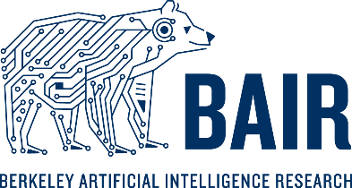

|
Minggang Li I am an undergraduate at UC Berkeley studying Computer Science, Applied Mathematics, and Statistics. I work on interpretable machine learning systems for clinical speech and biological foundation models. I am currently a researcher with the Berkeley AI Research (BAIR) Speech Group and the NASA AI4LS program, and will join Visa as a Software Engineering Intern in Summer 2026 working on authentication and identity infrastructure. |
{kind=link}
ResearchMy research focuses on interpretable representation learning and structured semantic modeling for speech and biological data. More broadly, I am interested in how language and other high-dimensional signals can be encoded into representations that capture semantic structure while remaining robust across domains and datasets. |
|
 |
Berkeley Artificial Intelligence Research (BAIR) [Paper]
Machine Learning Researcher with Prof. Gopala Anumanchipalli (Berkeley Speech Group) Oct 2025 – Present Working on interpretable phonological–semantic representation learning for primary progressive aphasia (PPA) subtype classification from clinical speech. Developing transformer-based modeling components and structured content-unit extraction systems for automated cognitive decline tracking. |
|
|
NASA Ames Research Center
Machine Learning Researcher Jan 2026 – Present Developing automated benchmarking pipelines for encoder-based representation learning on large-scale bulk RNA-seq datasets to study biological responses to microgravity and radiation. Evaluating cross-dataset generalization across heterogeneous transcriptomic repositories including NASA GeneLab, GEO, and ARCHS4. |
Experience |

|
Visa — Software Engineering Intern (Identity & Authentication Infrastructure)
May 2026 – Aug 2026 Working on large-scale backend systems supporting authentication and identity verification infrastructure for secure transaction workflows. |
|
|
Gilead Sciences — Machine Learning Engineer Intern [Poster]
Aug 2025 – Dec 2025 Built ETL and LLM inference pipelines for sentiment extraction from analyst reports, and evaluated chunking and prompting strategies against human-annotated benchmarks. |
|
Last updated April 2026. Design adapted from Jon Barron's website. |